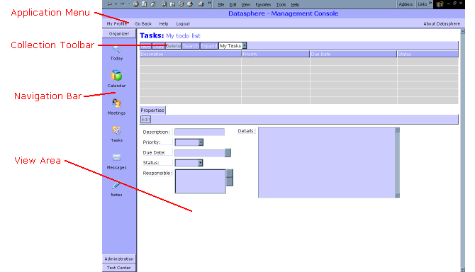
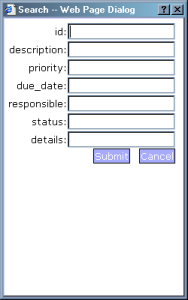
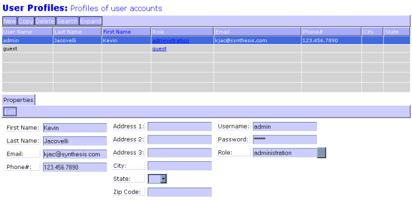
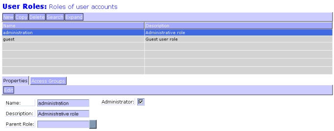
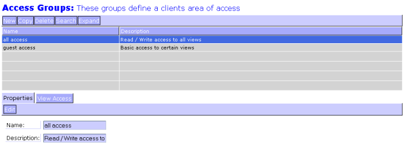
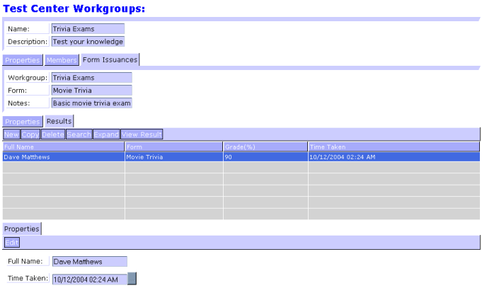
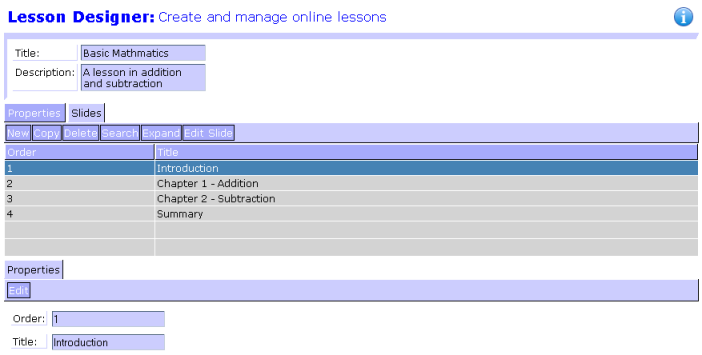
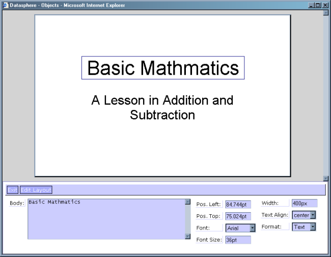
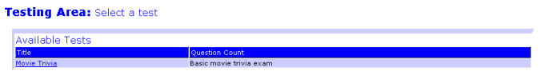
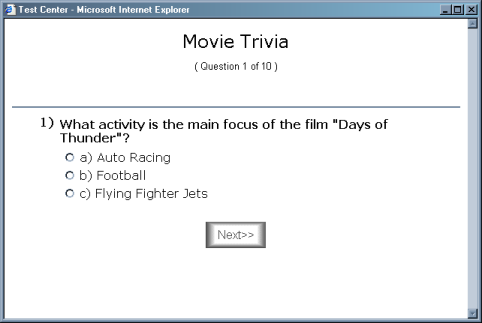

3.3.1.b. Single Test Result Details
Datashpere is a entirely web based tool used to provides the following data functionality:
Different types of concepts can be built into Datasphere which all share the same basic fundamental functionality at their core.
The basic navigational concepts of Datasphere allow the user to create and navigate through large amounts of data using simple and consistent technics. Once you have become comfortable with the concepts you can easily navigate anywhere within the environment.

2.a. Application Layout
The view area is used to display the working data of the application. All data is divided into Views which are displayed here.
The menu exposes "application wide" functionality to the user. From any view the menu is always available.
| My Profile | Takes you to your own profile. Here you can change address, username/password, phone, etc... |
| Go Back | Brings the view area back to the last page visited. |
| Help | Take you to the help pages you're looking at right now. |
| Logout | Log you out of the application. |
The navigate bar (or navbar for short) can be found on the left side of the application screen. Here you can navigate through all the views available to the user based on his/her access rights. The shortcuts are organized into folders which are used to separate different concepts.
The toolbar, which is associated with a collection of objects, can be found on the top of all object lists.
| New | Creates a new object |
| Copy | Copies the selected object |
| Delete | Deletes the selected object |
| Search | Allows the user to perform a specific search, or query, for objects |
| Expand/Collapse | Expands/Collapses the list size according to configuration |
You can specify details on what objects you want to see by using the searching functionality. Use the '*' character as a wildcard. (i.e. 'Data*' will return 'Datasphere')
Equations are also allowed in the search criteria. When searching a field containing numeric values the statement '>10' will return all values greater than 10. The supported operators are:
| > | Greater than |
| < | Less than |
| = | Equals |
| <> | Does not equal |

2.5.a. Search Dialog
This section goes into detail on the specific functionality of the system at the user level.
3.1. AdministrationThe administrative functionality of Datasphere encompasses the creation of users, roles, and access rights to the entire system.
3.1.1. User Profiles ViewThis view provides the ability to create and manage users (client) for the system. Basic profile information is available here. This is where a user is assigned a role which will be described in the next section.

3.1.a. Users
Create and maintain roles on this view. Roles define the abilities of the users in two ways. First, they are assigned access rights to specific views. This gives the administrator the ability to control what views a particular role can see. Second, the roles determine what objects the user can see. Roles are organized into a tree structure(s). You'll notice that roles have parent roles assigned to them. When looking at view containing 'protected' data, this structure restricts the data the user can see by allowing you access to data the user's role owns or data the user's sub-roles own.
The 'administrator' setting overrides the normal restrictions and gives the user access to all data and all views (unless a view is explicitly restriced to that role).

3.2.a. Roles
Access groups are used to group together a collection of resources with certain access levels assigned to them. In this version the only resources assigned through access groups are Views. They can be assigned as 'read only', 'read/write', and 'denied'.

3.3.a. Access
The organizer functionality of Datasphere provides basic 'day planner' concepts for the individual users.
3.2.1. FunctionalityThe organizer consists of four main concepts: Meetings, Tasks, Notes, and Messages. For the most part, the functionality of these concepts work as expected with one major difference... the objects can be shared across multiple users. Notes are private objects since they are only visible to the owner. Meetings and Tasks are visible based on the users assignements ('Attendees' and 'Responsible', respectfully). Messages are copied and sent to all 'Recipients'. In all cases, the user creating the object is automatically added to the assigned list.
3.2.2. Day and Month ViewsThere a two ways to view your schedule. The 'Today' view displays all objects based on the current day and the 'Calendar' view displays all objects by selected month.
You can create and administer lessons and multiple choice style exams using this functionality.
3.3.1. Workgroups ViewThis represents a grouping of users to which a test can be adminstered. It may be better to think of a workgroup as a 'classroom'. Before any user can participate in a test they must be added to a workgroup and that workgroup must contain a Form Issuance to that test.
Test results are available from within the workgroup view.

3.3.1.a. Test Results
To view an individual test select it and click 'View Result'.
3.3.1.b. Single Test Result Details
Lesson objects are created here. After creating a Lesson object Slide objects can be attached. Each of these objects represent a page of a bigger presentation.

3.3.2.a. Lesson Designer
From the Lesson Designer - Slide View select a Slide and click Edit Slide. The slide editor will allow the user to create, drag/drop, and format panels representing either text or HTML.

3.3.2.b. Slide Editor
Test objects are created here. After creating a Test object Question objects can be attached. Each of these objects represent a multiple choice question. Attached to each question is a list of Inputs which represent the possible choices to answer the given question. There can be one or more possible correct answer.

3.3.3.a. Test Designer
Each question can be assigned a Category. After a category is created and assigned to a 'Test' it can be referenced by the contained questions. The category appears above the question while it being referenced.
There is an example test named 'Movie Trivia'. This example can be helpful in learning how to build a test from scratch. The sample test needs to be copied to allow for editing. The 'Movie Trivia' test is 'Published', allowing it to be accessable to users. All tests MUST be 'Published' before they can be accessed.
3.3.4. Workspace ViewUsers can view and participate in all lessons and exams issued to any workgroups that user is a member of.

3.3.4.a. Workspace
By clicking on the links the user can begin taking the selected test.

3.3.4.b. Exam in Use
| Object | In the Datasphere world this is a reference to a logical grouping of data. |
| View | Graphic user interface concept for display of a Datasphere object collection or document. |